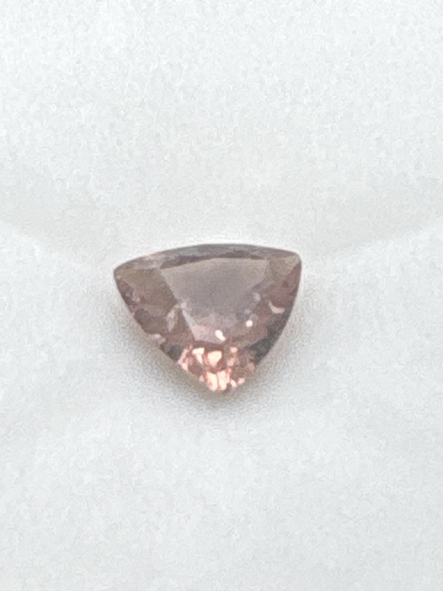

The Gem Drawer › No. 101

The second color-change garnet here, an 8 mm trillion reading brownish-pink.
| Catalogue no. | #101 |
|---|---|
| As labeled | Color Change Garnet - see notes (verify color shift under different light before listing) |
| Shape / cut | Trillion |
| Weight | 1.71 ct |
| Measurements | 8mm trillion |
| Colour | Brownish-pink/mauve as photographed under this lighting - see notes on verifying color-change effect |
| Clarity / condition | Not recorded |